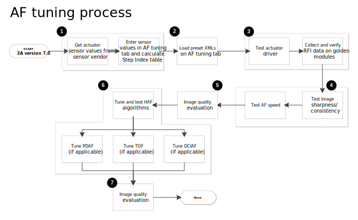

The following flow chart shows the prerequisites to tuning autofocus (AF) and where AF tuning fits in the overall tuning process. AF tuning can begin after PLD gating is complete, and occurs mostly in parallel with ISP, AWB, and AEC tuning. Changes in these other areas, especially AEC and ISP, may have an impact on AF tuning. This is complex, so stay organized. Maintain best practices in team communication and collaboration to minimize avoidable delays.

Actuator driver bringup
All of the prerequisites are important, but the first task, driver bringup, is essential to AF. As part of the actuator driver bringup, you should have already completed the AF Actuator Tuning Guide Worksheet (also called the RFI worksheet). The AF algorithm relies on these settings to determine lens movements and lens positions. The AF Actuator Tuning Guide Worksheet is included as an attachment in the AF Tuning Guide.
Process Overview
The following flow chart shows the tasks involved in AF tuning. An explanation of the process follows the chart.
| Future releases of the tool will provide this support. Until then, the defaults for these parameters should provide stable AF performance. | |
| Load the preset XMLs that correspond to the sensor and the expected device characteristics (e.g., low sensitivity, high accuracy, fast conergence, etc.). | |
| Run a series of tests to verify actuator driver performance and basic AF functionality. To ensure consistency, collect lens position measurements and compare them to the data generated in the AF Tuning tab. | |
| Run tests to check image sharpness and consistency as well as AF speed. | |
| Evaluate image quality (not covered in this document). | |
| Tune and test the hybrid
autofocus (HAF) algorithms applicable to the device. NOTE: These systems are not available in the initial release of Qualcomm Spectra 280 ISP camera software. |
|
| Evaluate image quality (not covered in this document). |
NOTE: All images used during the tuning process must be captured with the device that is being tuned.